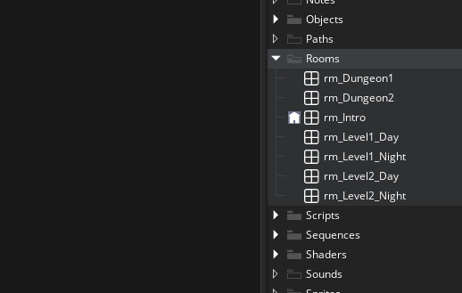
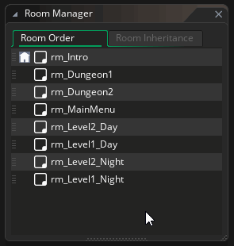
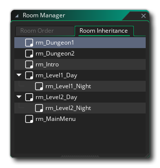
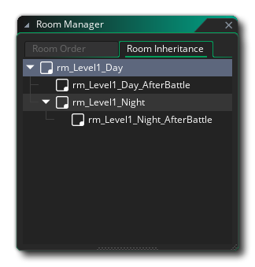

When using the Asset Browser, you can create your rooms and move them between the different folder groups to organise the project in a way that best suits you. However, games in GameMaker Studio 2 generally have rooms that follow a certain order, and at the very least must have a specific start room (after the game starts in this room you can use code or actions to go to any room in the game if you wish), which is where the Room Manager comes into play.
You can also open the room manager by clicking the "Extras"
button at the top of the Asset Browser and
selecting it from the menu that opens, or you can simply click
 the icon to the left of a room in the asset browser:
the icon to the left of a room in the asset browser:

Once open, the Room Manager presents you with two different tabs,
one for Room Order and one for Room Inheritance. The
room order defines the order in which rooms will be accessed if you
are traversing the game literally, using the function room_goto_next() at the end of each room, and the
very top room listed will always be flagged by the "home" icon
, which shows you that this room is the
designated start room for the game. This icon will also be shown in
the Asset browser so you can see clearly which room it is,
regardless of the how you have filtered or set up your assets.
You can change the order of rooms by simply clicking  and
dragging the room you want to move up or down the list, and you can
use
and
dragging the room you want to move up or down the list, and you can
use  and/or
and/or  /
/
 to select multiple rooms then click and drag them to move them
altogether:
to select multiple rooms then click and drag them to move them
altogether:

The Room Inheritance tab is for setting up "child" rooms. A child
room is one that has been copied from a "parent" room and set to
inherit all it's properties. If you do nothing to this room, then
this room will indeed be a copy of the original room, but you can
then go into the Room Editor and toggle inheritance on or off for
specific things like layer, or instances, as well as add new
layers, instances and properties to the room. 
As with the Room Order tab, you can click  and drag
to reorder the rooms, but note that selecting a child room and
moving it to a different parent will break the room inheritance
with the original parent and it will instead inherit the properties
of the new room. Note that you can convert a child into a "full"
room with no inheritance by dragging it to the left of the list
(the list border will become highlighted), at which point it will
simply become a room in its own right.
and drag
to reorder the rooms, but note that selecting a child room and
moving it to a different parent will break the room inheritance
with the original parent and it will instead inherit the properties
of the new room. Note that you can convert a child into a "full"
room with no inheritance by dragging it to the left of the list
(the list border will become highlighted), at which point it will
simply become a room in its own right.
Rooms can have multiple children, and each child can also be a parent and have their own children, for example: 
Here we have a parent room, "rm_Level1_Day", which has two children "rm_Level1_Day_AfterBattle" and "rm_Level1_Night". We have also assigned another child room to "rm_Level1_Night" called "rm_Level1_Night_AfterBattle". In this way you can re-use resources and level design from one parent room, and then only change what is required to make it slightly different in the child room or rooms.
For more information on room inheritance, please see the section on the Room Editor.